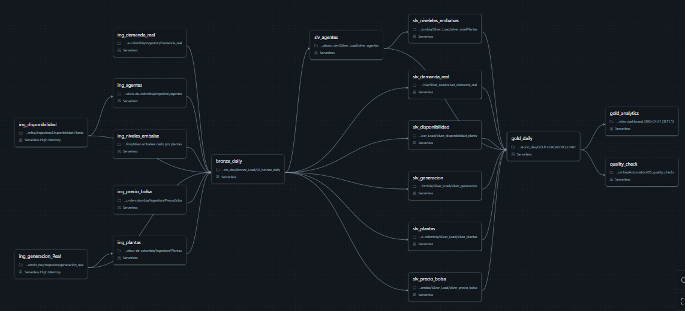

Granos diferentes
Medidas horarias, diarias y catálogos históricos.
Cómo diseñé un MVP Lakehouse en Databricks para convertir fuentes públicas, versionadas y heterogéneas del mercado eléctrico colombiano en un producto de datos trazable.
How I designed a Databricks Lakehouse MVP to turn public, versioned and heterogeneous Colombian electricity-market sources into a traceable data product.
Del archivo al producto de datos
SIMEM publica datos valiosos, pero analizarlos juntos exige resolver granos, versiones, historia dimensional y cortes temporales diferentes.
Conectar Power BI directamente a los archivos habría trasladado la complejidad al dashboard: doble conteo TX, joins que pierden plantas y KPI construidos con fechas de actualización distintas.
La solución se diseñó como un producto de datos reproducible: conservar lo recibido, transformarlo con reglas explícitas, validar sus contratos y publicar una capa semántica estable.
Medidas horarias, diarias y catálogos históricos.
Varias filas pueden ser revisiones de la misma medición.
Plantas y agentes cambian a través del tiempo.
Cada fuente tiene su propio corte de publicación.
Dominio y procedencia
055A4D · GREALMedición horaria por planta, agente y versión.
DISPREALCapacidad disponible por recurso y hora.
EC6945 · PBPB nacional, internacional y TIE.
DEMREALConsumo por agente y mercado.
NEMMedición diaria reportada por planta.
MASTERCatálogos históricos y atributos del dominio.
GEOCatálogo y coordenadas.
RELATIONRelación para navegación analítica.
AUDITArchivos, tiempos de ingesta y fechas de carga.
Diseño Lakehouse
El diseño visual distingue responsabilidades, tecnología y propósito de cada capa.
JSON/JSON.GZ en Unity Catalog Volumes.
Payload cercano a fuente y metadatos.
Tipos, normalización y contratos.
Hechos, dimensiones y vistas.
Permite reprocesar sin volver a consultar SIMEM.
Conserva evidencia del payload y cómo llegó.
Fija contratos técnicos reutilizables.
Organiza el dato según preguntas de negocio.
Extracción y recepción
La superposición no es un error. Es la estrategia que permite volver a leer un periodo revisable y dejar que la idempotencia aguas abajo determine qué cambió.
Ingestion/generacion_real.py
if bronze_is_empty:
fecha_inicio = historical_start_date
execution_mode = "BACKFILL"
else:
fecha_inicio = fecha_fin - timedelta(days=45)
execution_mode = "INCREMENTAL"
df_generacion = ReadSIMEM(
"055A4D", fecha_inicio_str, fecha_fin_str
).main(filter=True)Detecta si existe historia, calcula el rango y solicita la fuente. El lookback captura revisiones retroactivas.
Consultar solo fechas nuevas dejaría sin actualizar valores corregidos por SIMEM.
Incremental no siempre significa “solo lo nuevo”; significa reprocesar de forma controlada e idempotente.
Conservación y contrato
Las columnas de negocio permanecen cercanas al formato de la fuente. source_file_name, source_file_path, ingestion_timestamp y load_date crean trazabilidad operacional.
Confiabilidad técnica
Normaliza códigos, convierte fechas y valores, controla la llave técnica incluyendo versión y aplica MERGE para actualizar o insertar lo necesario.
Filtra Bronze por ingestion_timestamp.
Convierte fecha_hora y medidas.
trim + upper estabiliza identificadores.
Implementa upsert idempotente.
EDA · método
Se evaluaron 24.590.150 registros en nueve tablas Bronze sin modificar la capa.
Inventario conjunto de Bronze.
Hechos, maestros y geografía.
Fuerte para conservación; condicionada para análisis.
Conteos, fechas, archivos y trazabilidad.
Tipos, unidades, variables, mercados y versiones.
Duplicados técnicos frente a multiplicidad TX legítima.
Cobertura de maestros y corte común.
Generación, disponibilidad, capacidad y demanda.
Cada hallazgo produjo una acción para Silver o Gold.
| Dimensión | Evidencia | Evaluación |
|---|---|---|
| Estructura y tipos | 0 conversiones inválidas | Fuerte |
| Unicidad técnica | 0 duplicados exactos | Fuerte |
| Integridad planta | 161 códigos huérfanos en generación; 168 en disponibilidad | Riesgo alto |
| Frescura comparativa | Último corte común 2026-07-13 | Riesgo alto |
| Geografía | 13 de 32 embalses sin coordenadas durante el EDA | Condicionado |
EDA · hallazgos
Bronze no puede sumarse directamente.
Un INNER JOIN habría eliminado una parte material de los recursos.
0,5166 % de las horas comparables; señal concentrada.
Regla de monitoreo, no rechazo automático.
Resultado provisional hasta realizar join histórico as-of.
Excluir del denominador del factor de capacidad.
La cobertura por código fue 73,69 % en generación y 72,90 % en disponibilidad.
LEFT JOIN y dimensiones conformadas en lugar de INNER JOIN.
Gold mantiene el recurso y completa atributos cuando aparece el maestro.
| Hallazgo | Riesgo | Decisión | Resolución |
|---|---|---|---|
| Versiones TX | Doble conteo | Una versión canónica | Gold staging |
| Plantas huérfanas | Pérdida de hechos | LEFT JOIN + inferidos | dim_planta |
| Cortes desalineados | KPI engañosos | Fecha común | Gold Analytics |
| Capacidad histórica | Falsos positivos | Join as-of | SCD2 |
| Coordenadas | Mapas incompletos | Enriquecimiento trazable | dim_embalse |
Arquitectura Gold
Diagrama Mermaid basado en Arquitectura GOLD decisiones.md.
Cada hecho conserva su grano y comparte dimensiones conformadas. Demanda se muestra como extensión posterior.
flowchart LR classDef dim fill:#dce8ed,stroke:#8da6b1,color:#0b2230,stroke-width:1.5px; classDef fact fill:#f4d98e,stroke:#c79834,color:#38280a,stroke-width:2px; classDef bridge fill:#b7eee9,stroke:#43c8c2,color:#0b3033,stroke-width:2px; classDef ext fill:#e3d4f4,stroke:#a27fc6,color:#332040,stroke-width:1.5px,stroke-dasharray: 5 4; subgraph D[Dimensiones conformadas] DF[dim_fecha]:::dim DP[dim_periodo]:::dim DPL[dim_planta<br/>SCD Tipo 2]:::dim DA[dim_agente<br/>SCD Tipo 2]:::dim DE[dim_embalse<br/>SCD Tipo 1]:::dim end subgraph F[Constelación de hechos] FG[fact_generacion_real<br/>hora + planta + agente]:::fact FD[fact_disponibilidad_planta<br/>hora + planta]:::fact FP[fact_precio_bolsa<br/>hora]:::fact FE[fact_energia_embalsada_planta<br/>día + planta]:::fact FDR[fact_demanda_real<br/>hora + agente + mercado]:::ext end B[bridge_planta_embalse<br/>muchos a muchos]:::bridge DF --> FG DP --> FG DPL --> FG DA --> FG DF --> FD DP --> FD DPL --> FD DF --> FP DP --> FP DF --> FE DPL --> FE DF --> FDR DP --> FDR DA --> FDR DPL --> B B --> DE
Contexto reutilizable entre hechos.
Preservan granos y relaciones distintas.
Resuelve atributos vigentes en la fecha del evento.
Representa plantas con más de un embalse.
Implementación Gold
Selecciona la versión TX prioritaria.
Crea una llave determinística del evento.
Busca planta y agente vigentes en la fecha.
Actualiza la medición cuando cambia la revisión.
Capa de consumo
vw_sistema_horarioGeneración, demanda, disponibilidad y precio por hora.
vw_resumen_diario_sistemaResumen diario con reglas centralizadas.
vw_actualizacion_fuentesFecha de corte por fuente.
vw_operacion_diaria_plantaOperación y utilización por recurso.
vw_generacion_diaria_tipoGeneración por tecnología.
vw_energia_embalsada_diariaSerie diaria de energía embalsada.
La URL de inserción se configura cuando el reporte esté publicado.
Orquestación y calidad

Reducen duración sin romper dependencias.
Bronze y Gold esperan sus tareas previas.
Duplicados o claves sin dimensión provocan fallo visible.
Revisar si quality_check debe bloquear Analytics antes de publicación.
Estado del MVP
0 claves duplicadas.
Cobertura dimensional validada.
Hechos preservados sin perder recursos.